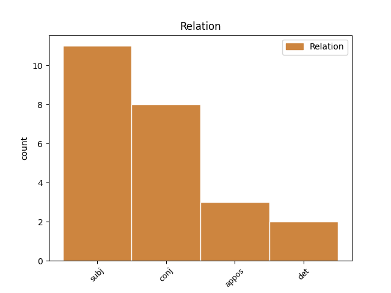
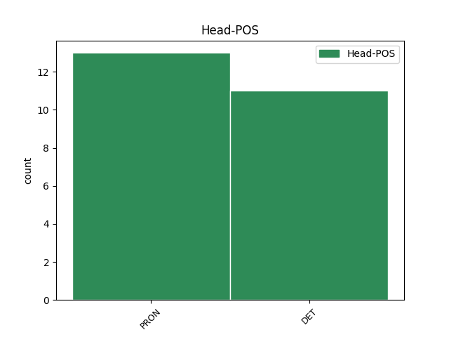
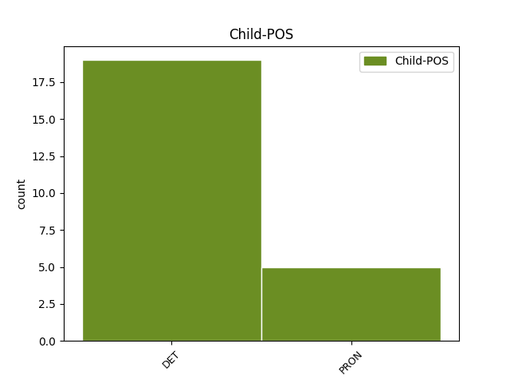

Distribution of features within this leaf



Agreement Rules sorted by frequency.
- When the dependent token is the subject(subj) of the head token, and the head token is PRON and the dependent token is DET.
1 ⲡ ⲡ DET ART Definite=Def|Gender=Masc|Number=Sing|PronType=Art 14 subj _ _
2 ⲉⲧ _ _ _ _ 0 _ _ _
3 ⲧⲱϭⲉ _ _ _ _ 0 _ _ _
4 ⲇⲉ _ _ _ _ 0 _ _ _
5 ⲙⲙⲟ _ _ _ _ 0 _ _ _
6 ϥ _ _ _ _ 0 _ _ _
7 ⲉ _ _ _ _ 0 _ _ _
8 ⲡ _ _ _ _ 0 _ _ _
9 ϫⲟⲉⲓⲥ _ _ _ _ 0 _ _ _
10 ⲟⲩ _ _ _ _ 0 _ _ _
11 ⲡⲛⲉⲩⲙⲁ _ _ _ _ 0 _ _ _
12 ⲛ _ _ _ _ 0 _ _ _
13 ⲟⲩⲱⲧ _ _ _ _ 0 _ _ _
14 ⲡⲉ ⲡⲉ PRON COP Gender=Masc|Number=Sing 0 _ _ _
15 . _ _ _ _ 0 _ _ _
1 ⲛ _ _ _ _ 0 _ _ _
2 ϥ _ _ _ _ 0 _ _ _
3 ⲛⲁ _ _ _ _ 0 _ _ _
4 ϣϭⲙϭⲟⲙ _ _ _ _ 0 _ _ _
5 ⲅⲁⲣ _ _ _ _ 0 _ _ _
6 ⲁⲛ _ _ _ _ 0 _ _ _
7 ⲉ _ _ _ _ 0 _ _ _
8 ⲛ ⲡ DET ART Definite=Def|Number=Plur|PronType=Art 0 _ _ _
9 ⲉⲧ _ _ _ _ 0 _ _ _
10 ⲣϩⲟⲧⲉ _ _ _ _ 0 _ _ _
11 ϩⲏⲧ _ _ _ _ 0 _ _ _
12 ϥ _ _ _ _ 0 _ _ _
13 ⲙ _ _ _ _ 0 _ _ _
14 ⲡ _ _ _ _ 0 _ _ _
15 ⲛⲟⲩⲧⲉ _ _ _ _ 0 _ _ _
16 . _ _ _ _ 0 _ _ _
17 ⲛⲁⲓ ⲡⲁⲓ DET PDEM Definite=Def|Number=Plur|PronType=Dem 8 appos _ Orig=ⲛⲁⲓ̈
18 ⲉⲧⲉⲣⲉ _ _ _ _ 0 _ _ _
19 ⲡⲉ _ _ _ _ 0 _ _ _
20 ⲭⲣⲓⲥⲧⲟⲥ _ _ _ _ 0 _ _ _
21 ϣⲟⲟⲡ _ _ _ _ 0 _ _ _
22 ⲛⲁ _ _ _ _ 0 _ _ _
23 ⲩ _ _ _ _ 0 _ _ _
24 ⲛ _ _ _ _ 0 _ _ _
25 ⲃⲟⲏⲑⲟⲥ _ _ _ _ 0 _ _ _
26 ⲁⲩⲱ _ _ _ _ 0 _ _ _
27 ⲛ _ _ _ _ 0 _ _ _
28 ⲥⲕⲉⲡⲁⲥⲧⲏⲥ _ _ _ _ 0 _ _ _
29 · _ _ _ _ 0 _ _ _
1 ⲡ ⲡ DET ART Definite=Def|Gender=Masc|Number=Sing|PronType=Art 9 subj _ _
2 ⲉⲧ _ _ _ _ 0 _ _ _
3 ⲛⲁ _ _ _ _ 0 _ _ _
4 ⲙⲉⲣⲉ _ _ _ _ 0 _ _ _
5 ⲡ _ _ _ _ 0 _ _ _
6 ⲡⲉⲧϩⲟⲟⲩ _ _ _ _ 0 _ _ _
7 , _ _ _ _ 0 _ _ _
8 ⲛⲧⲟϥ _ _ _ _ 0 _ _ _
9 ⲡ ⲡ DET ART Definite=Def|Gender=Masc|Number=Sing|PronType=Art 0 _ _ _
10 ⲉⲧ _ _ _ _ 0 _ _ _
11 ⲛⲁ _ _ _ _ 0 _ _ _
12 ⲧⲁⲕⲟ _ _ _ _ 0 _ _ _
13 · _ _ _ _ 0 _ _ _
1 ⲙⲡⲣ _ _ _ _ 0 _ _ _
2 ϭⲱ _ _ _ _ 0 _ _ _
3 ⲛ _ _ _ _ 0 _ _ _
4 ⲟⲩⲉϣ _ _ _ _ 0 _ _ _
5 ⲛ _ _ _ _ 0 _ _ _
6 ⲧⲁⲙⲟ _ _ _ _ 0 _ _ _
7 ⲟⲩ _ _ _ _ 0 _ _ _
8 ⲛ _ _ _ _ 0 _ _ _
9 ⲧⲉⲧⲛ _ _ _ _ 0 _ _ _
10 ⲧⲙ _ _ _ _ 0 _ _ _
11 ϩⲉⲡ _ _ _ _ 0 _ _ _
12 ⲗⲁⲁⲩ _ _ _ _ 0 _ _ _
13 ⲛ _ _ _ _ 0 _ _ _
14 ϩⲱⲃ _ _ _ _ 0 _ _ _
15 ⲉⲣⲟ _ _ _ _ 0 _ _ _
16 ⲟⲩ _ _ _ _ 0 _ _ _
17 · _ _ _ _ 0 _ _ _
18 ϫⲉⲕⲁⲥ _ _ _ _ 0 _ _ _
19 ⲉⲣⲉ _ _ _ _ 0 _ _ _
20 ⲡⲉⲛ _ _ _ _ 0 _ _ _
21 ϩⲏⲧ _ _ _ _ 0 _ _ _
22 ⲛⲁ _ _ _ _ 0 _ _ _
23 ⲙⲧⲟⲛ _ _ _ _ 0 _ _ _
24 ⲧⲏⲣ _ _ _ _ 0 _ _ _
25 ⲛ _ _ _ _ 0 _ _ _
26 ϩⲓ _ _ _ _ 0 _ _ _
27 ⲟⲩ _ _ _ _ 0 _ _ _
28 ⲥⲟⲡ _ _ _ _ 0 _ _ _
29 ⲁⲛⲟⲛ ⲁⲛⲟⲛ PRON PPERI Definite=Def|Number=Plur|Person=1|PronType=Prs 0 _ _ _
30 ⲁⲩⲱ _ _ _ _ 0 _ _ _
31 ⲛⲧⲱⲧⲛ ⲛⲧⲱⲧⲛ PRON PPERI Definite=Def|Number=Plur|Person=2|PronType=Prs 29 conj _ Orig=ⲛ̄ⲧⲱⲧ︤ⲛ︥
32 · _ _ _ _ 0 _ _ _
1 ⲉ _ _ _ _ 0 _ _ _
2 ⲕ _ _ _ _ 0 _ _ _
3 ⲧⲁⲙⲟ _ _ _ _ 0 _ _ _
4 ⲙⲙⲟ _ _ _ _ 0 _ _ _
5 ⲛ _ _ _ _ 0 _ _ _
6 ⲁⲩⲱ _ _ _ _ 0 _ _ _
7 ⲉ _ _ _ _ 0 _ _ _
8 ⲕ _ _ _ _ 0 _ _ _
9 ϭⲱⲗⲡ _ _ _ _ 0 _ _ _
10 ⲉⲃⲟⲗ _ _ _ _ 0 _ _ _
11 ⲛ _ _ _ _ 0 _ _ _
12 ⲧⲉⲕ _ _ _ _ 0 _ _ _
13 ⲕⲁⲕⲓⲁ _ _ _ _ 0 _ _ _
14 ϫⲉ _ _ _ _ 0 _ _ _
15 ⲙⲡⲉ _ _ _ _ 0 _ _ _
16 ⲕ _ _ _ _ 0 _ _ _
17 ⲟⲩⲱϣ _ _ _ _ 0 _ _ _
18 ⲁⲛ _ _ _ _ 0 _ _ _
19 ⲡⲉ _ _ _ _ 0 _ _ _
20 ⲉ _ _ _ _ 0 _ _ _
21 ⲧⲣⲉ _ _ _ _ 0 _ _ _
22 ⲛ _ _ _ _ 0 _ _ _
23 ϣⲏⲣⲉ _ _ _ _ 0 _ _ _
24 ⲙ _ _ _ _ 0 _ _ _
25 ⲡ _ _ _ _ 0 _ _ _
26 ⲛⲟⲩⲧⲉ _ _ _ _ 0 _ _ _
27 ϫⲓ _ _ _ _ 0 _ _ _
28 ⲟⲩ _ _ _ _ 0 _ _ _
29 ⲡⲣⲟⲥⲫⲟⲣⲁ _ _ _ _ 0 _ _ _
30 ⲉ _ _ _ _ 0 _ _ _
31 ⲧⲉϥ _ _ _ _ 0 _ _ _
32 ⲉⲕⲕⲗⲏⲥⲓⲁ _ _ _ _ 0 _ _ _
33 . _ _ _ _ 0 _ _ _
34 ⲏ _ _ _ _ 0 _ _ _
35 ⲉⲣ _ _ _ _ 0 _ _ _
36 ⲟⲩ ⲟⲩ DET ART Definite=Ind|Number=Sing|PronType=Art 37 det _ _
37 ⲡ ⲡ DET ART Definite=Def|Gender=Masc|Number=Sing|PronType=Art 0 _ _ _
38 ⲉⲧ _ _ _ _ 0 _ _ _
39 ⲛⲁⲛⲟⲩ _ _ _ _ 0 _ _ _
40 ϥ _ _ _ _ 0 _ _ _
41 ⲛ _ _ _ _ 0 _ _ _
42 ⲟⲩⲱⲧ _ _ _ _ 0 _ _ _
43 ϩⲙ _ _ _ _ 0 _ _ _
44 ⲡ _ _ _ _ 0 _ _ _
45 ⲣⲁⲛ _ _ _ _ 0 _ _ _
46 ⲛ _ _ _ _ 0 _ _ _
47 ⲓⲏⲥⲟⲩⲥ _ _ _ _ 0 _ _ _
48 . _ _ _ _ 0 _ _ _
1 ⲕ _ _ _ _ 0 _ _ _
2 ⲡⲟⲛⲏⲣⲉⲩⲉ _ _ _ _ 0 _ _ _
3 ⲇⲉ _ _ _ _ 0 _ _ _
4 ϩⲱⲱ _ _ _ _ 0 _ _ _
5 ϥ _ _ _ _ 0 _ _ _
6 ⲁⲩⲱ _ _ _ _ 0 _ _ _
7 ⲕ _ _ _ _ 0 _ _ _
8 ⲕⲁϫⲣⲟⲡ _ _ _ _ 0 _ _ _
9 ⲉϩⲣⲁⲓ _ _ _ _ 0 _ _ _
10 ⲛ _ _ _ _ 0 _ _ _
11 ⲛ _ _ _ _ 0 _ _ _
12 ⲣⲉϥϯ _ _ _ _ 0 _ _ _
13 ⲛ _ _ _ _ 0 _ _ _
14 ⲛ _ _ _ _ 0 _ _ _
15 ϩⲏⲕⲉ _ _ _ _ 0 _ _ _
16 . _ _ _ _ 0 _ _ _
17 ⲉ _ _ _ _ 0 _ _ _
18 ⲩ _ _ _ _ 0 _ _ _
19 ⲥⲟⲟⲩⲛ _ _ _ _ 0 _ _ _
20 ϫⲉ _ _ _ _ 0 _ _ _
21 ⲛ ⲡ DET ART Definite=Def|Number=Plur|PronType=Art 0 _ _ _
22 ⲉⲧ _ _ _ _ 0 _ _ _
23 ⲟⲩ _ _ _ _ 0 _ _ _
24 ϯ _ _ _ _ 0 _ _ _
25 ⲙⲙⲟ _ _ _ _ 0 _ _ _
26 ⲟⲩ _ _ _ _ 0 _ _ _
27 ⲏ _ _ _ _ 0 _ _ _
28 ⲛ ⲡ DET ART Definite=Def|Number=Plur|PronType=Art 21 conj _ _
29 ⲉⲧ _ _ _ _ 0 _ _ _
30 ⲟⲩ _ _ _ _ 0 _ _ _
31 ⲛⲁ _ _ _ _ 0 _ _ _
32 ⲛϩⲏⲧ _ _ _ _ 0 _ _ _
33 ⲟⲩ _ _ _ _ 0 _ _ _
34 ⲛ _ _ _ _ 0 _ _ _
35 ⲛ _ _ _ _ 0 _ _ _
36 ⲉⲧ _ _ _ _ 0 _ _ _
37 ⲣϭⲣⲱϩ _ _ _ _ 0 _ _ _
38 ⲛⲁ _ _ _ _ 0 _ _ _
39 ⲡⲉ _ _ _ _ 0 _ _ _
40 ⲭⲣⲓⲥⲧⲟⲥ _ _ _ _ 0 _ _ _
41 ⲛⲉ _ _ _ _ 0 _ _ _
42 ⲛⲧ _ _ _ _ 0 _ _ _
43 ⲁ _ _ _ _ 0 _ _ _
44 ϥ _ _ _ _ 0 _ _ _
45 ⲧⲁⲁ _ _ _ _ 0 _ _ _
46 ⲩ _ _ _ _ 0 _ _ _
47 ⲛⲁ _ _ _ _ 0 _ _ _
48 ⲩ _ _ _ _ 0 _ _ _
49 ⲉ _ _ _ _ 0 _ _ _
50 ⲩ _ _ _ _ 0 _ _ _
51 ⲁⲡⲟⲗⲁⲩⲥⲓⲥ _ _ _ _ 0 _ _ _
52 . _ _ _ _ 0 _ _ _
53 ⲁⲩⲱ _ _ _ _ 0 _ _ _
54 ⲣⲣⲙⲙⲁⲟ _ _ _ _ 0 _ _ _
55 ϩⲛ _ _ _ _ 0 _ _ _
56 ϩⲉⲛ _ _ _ _ 0 _ _ _
57 ϩⲃⲏⲩⲉ _ _ _ _ 0 _ _ _
58 ⲉ _ _ _ _ 0 _ _ _
59 ⲛⲁⲛⲟⲩ _ _ _ _ 0 _ _ _
60 ⲟⲩ _ _ _ _ 0 _ _ _
61 . _ _ _ _ 0 _ _ _
1 ⲡ _ _ _ _ 0 _ _ _
2 ⲉⲧ _ _ _ _ 0 _ _ _
3 ⲛⲁ _ _ _ _ 0 _ _ _
4 ϣⲱⲡ _ _ _ _ 0 _ _ _
5 ⲉⲣⲟ _ _ _ _ 0 _ _ _
6 ϥ _ _ _ _ 0 _ _ _
7 ⲛ _ _ _ _ 0 _ _ _
8 ⲟⲩⲁ _ _ _ _ 0 _ _ _
9 ⲛ _ _ _ _ 0 _ _ _
10 ⲧ _ _ _ _ 0 _ _ _
11 ϩⲉ _ _ _ _ 0 _ _ _
12 ⲛ _ _ _ _ 0 _ _ _
13 ⲛⲓ _ _ _ _ 0 _ _ _
14 ϣⲏⲣⲉ _ _ _ _ 0 _ _ _
15 ϣⲏⲙ _ _ _ _ 0 _ _ _
16 ϩⲙ _ _ _ _ 0 _ _ _
17 ⲡⲁ _ _ _ _ 0 _ _ _
18 ⲣⲁⲛ _ _ _ _ 0 _ _ _
19 ⲁⲛⲟⲕ _ _ _ _ 0 _ _ _
20 ⲡ _ _ _ _ 0 _ _ _
21 ⲉⲧ _ _ _ _ 0 _ _ _
22 ϥ _ _ _ _ 0 _ _ _
23 ⲛⲁ _ _ _ _ 0 _ _ _
24 ϣⲟⲡ _ _ _ _ 0 _ _ _
25 ⲧ _ _ _ _ 0 _ _ _
26 ⲉⲣⲟ _ _ _ _ 0 _ _ _
27 ϥ _ _ _ _ 0 _ _ _
28 . _ _ _ _ 0 _ _ _
29 ⲁⲩⲱ _ _ _ _ 0 _ _ _
30 ⲡ _ _ _ _ 0 _ _ _
31 ⲉⲧ _ _ _ _ 0 _ _ _
32 ⲛⲁ _ _ _ _ 0 _ _ _
33 ϣⲟⲡ _ _ _ _ 0 _ _ _
34 ⲧ _ _ _ _ 0 _ _ _
35 ⲉⲣⲟ _ _ _ _ 0 _ _ _
36 ϥ _ _ _ _ 0 _ _ _
37 ⲛ _ _ _ _ 0 _ _ _
38 ⲁⲛⲟⲕ ⲁⲛⲟⲕ PRON PPERI Definite=Def|Number=Sing|Person=1|PronType=Prs 0 _ _ _
39 ⲁⲛ _ _ _ _ 0 _ _ _
40 ⲡ _ _ _ _ 0 _ _ _
41 ⲉⲧ _ _ _ _ 0 _ _ _
42 ϥ _ _ _ _ 0 _ _ _
43 ⲛⲁ _ _ _ _ 0 _ _ _
44 ϣⲟⲡ _ _ _ _ 0 _ _ _
45 ⲧ _ _ _ _ 0 _ _ _
46 ⲉⲣⲟ _ _ _ _ 0 _ _ _
47 ϥ _ _ _ _ 0 _ _ _
48 ⲁⲗⲗⲁ _ _ _ _ 0 _ _ _
49 ⲡ ⲡ DET ART Definite=Def|Gender=Masc|Number=Sing|PronType=Art 38 conj _ _
50 ⲉⲛⲧ _ _ _ _ 0 _ _ _
51 ⲁ _ _ _ _ 0 _ _ _
52 ϥ _ _ _ _ 0 _ _ _
53 ⲧⲛⲛⲟⲟⲩ _ _ _ _ 0 _ _ _
54 ⲧ _ _ _ _ 0 _ _ _
55 . _ _ _ _ 0 _ _ _
1 ⲁⲗⲗⲁ _ _ _ _ 0 _ _ _
2 ⲛⲧⲱⲧⲛ ⲛⲧⲱⲧⲛ PRON PPERI Definite=Def|Number=Plur|Person=2|PronType=Prs 3 subj _ _
3 ⲛ ⲡ DET ART Definite=Def|Number=Plur|PronType=Art 0 _ _ _
4 ⲉⲧ _ _ _ _ 0 _ _ _
5 ϫⲓ _ _ _ _ 0 _ _ _
6 ⲛ _ _ _ _ 0 _ _ _
7 ϭⲟⲛⲥ _ _ _ _ 0 _ _ _
8 . _ _ _ _ 0 _ _ _
9 ⲁⲩⲱ _ _ _ _ 0 _ _ _
10 ⲉⲧ _ _ _ _ 0 _ _ _
11 ϥⲱϭⲉ _ _ _ _ 0 _ _ _
12 ⲁⲩⲱ _ _ _ _ 0 _ _ _
13 ⲡⲁⲓ _ _ _ _ 0 _ _ _
14 ⲛ _ _ _ _ 0 _ _ _
15 ⲛⲉⲧⲛ _ _ _ _ 0 _ _ _
16 ⲥⲛⲏⲩ _ _ _ _ 0 _ _ _
17 . _ _ _ _ 0 _ _ _
1 ⲛⲉⲣⲉ ⲛⲉⲣⲉ_ⲛⲧⲟ PRON CPRET_PPERS Definite=Def|Gender=Fem|Number=Sing|Person=2|PronType=Prs 3 subj _ _
2 ⲏⲡ _ _ _ _ 0 _ _ _
3 ⲡⲉ ⲡⲉ PRON COP Gender=Masc|Number=Sing 0 _ _ _
4 ⲉ _ _ _ _ 0 _ _ _
5 ⲧⲁⲙⲟ _ _ _ _ 0 _ _ _
6 ⲛ _ _ _ _ 0 _ _ _
7 ⲉ _ _ _ _ 0 _ _ _
8 ⲡⲟⲩ _ _ _ _ 0 _ _ _
9 ⲙⲕⲁϩ _ _ _ _ 0 _ _ _
10 · _ _ _ _ 0 _ _ _
1 ⲛ _ _ _ _ 0 _ _ _
2 ⲧ _ _ _ _ 0 _ _ _
3 ϩⲉ _ _ _ _ 0 _ _ _
4 ⲉⲧ _ _ _ _ 0 _ _ _
5 ⲥⲏϩ _ _ _ _ 0 _ _ _
6 ϫⲉ _ _ _ _ 0 _ _ _
7 ⲡ ⲡ DET ART Definite=Def|Gender=Masc|Number=Sing|PronType=Art 0 _ _ _
8 ⲉⲧ _ _ _ _ 0 _ _ _
9 ⲙⲓϣⲉ _ _ _ _ 0 _ _ _
10 ⲉϫⲱ _ _ _ _ 0 _ _ _
11 ⲕ _ _ _ _ 0 _ _ _
12 ⲡⲉ _ _ _ _ 0 _ _ _
13 ⲡⲉⲕ _ _ _ _ 0 _ _ _
14 ⲃⲟⲏⲑⲟⲥ _ _ _ _ 0 _ _ _
15 , _ _ _ _ 0 _ _ _
16 ⲁⲩⲱ _ _ _ _ 0 _ _ _
17 ⲧ _ _ _ _ 0 _ _ _
18 ⲥⲏϥⲉ _ _ _ _ 0 _ _ _
19 ⲡⲉ ⲡⲉ PRON COP Gender=Masc|Number=Sing 7 conj _ _
20 ⲙ _ _ _ _ 0 _ _ _
21 ⲡⲉⲕ _ _ _ _ 0 _ _ _
22 ϣⲟⲩϣⲟⲩ _ _ _ _ 0 _ _ _
23 ⲁⲩⲱ _ _ _ _ 0 _ _ _
24 ⲡ _ _ _ _ 0 _ _ _
25 ⲉⲟⲟⲩ _ _ _ _ 0 _ _ _
26 ⲙ _ _ _ _ 0 _ _ _
27 ⲡⲉ _ _ _ _ 0 _ _ _
28 ⲥⲧⲉⲣⲉⲱⲙⲁ _ _ _ _ 0 _ _ _
29 · _ _ _ _ 0 _ _ _
Disagree Examples:
1 ⲉ _ _ _ _ 0 _ _ _
2 ⲙⲙⲛ _ _ _ _ 0 _ _ _
3 ⲙⲛⲧⲣⲙϩⲉ _ _ _ _ 0 _ _ _
4 ϣⲟⲟⲡ _ _ _ _ 0 _ _ _
5 ⲛ _ _ _ _ 0 _ _ _
6 ⲛ _ _ _ _ 0 _ _ _
7 ⲉⲧ _ _ _ _ 0 _ _ _
8 ⲕⲱ _ _ _ _ 0 _ _ _
9 ⲛ _ _ _ _ 0 _ _ _
10 ϩⲧⲏ _ _ _ _ 0 _ _ _
11 ⲩ _ _ _ _ 0 _ _ _
12 ⲉ _ _ _ _ 0 _ _ _
13 ⲕⲣⲟⲛⲟⲥ _ _ _ _ 0 _ _ _
14 , _ _ _ _ 0 _ _ _
15 ⲉⲧⲉ _ _ _ _ 0 _ _ _
16 ⲛⲧⲟⲕ ⲛⲧⲟⲕ PRON PPERI Definite=Def|Gender=Masc|Number=Sing|Person=2|PronType=Prs 0 _ _ _
17 ⲡⲉ _ _ _ _ 0 _ _ _
18 ⲙⲛ _ _ _ _ 0 _ _ _
19 ⲛ ⲡ DET ART Definite=Def|Number=Plur|PronType=Art 16 conj _ _
20 ⲉⲧ _ _ _ _ 0 _ _ _
21 ⲧⲛⲧⲱⲛ _ _ _ _ 0 _ _ _
22 ⲉⲣⲟ _ _ _ _ 0 _ _ _
23 ⲕ _ _ _ _ 0 _ _ _
24 ϩⲛ _ _ _ _ 0 _ _ _
25 ⲙ _ _ _ _ 0 _ _ _
26 ⲙⲛⲧⲁⲡⲓⲥⲧⲟⲥ _ _ _ _ 0 _ _ _
27 , _ _ _ _ 0 _ _ _
28 ⲙⲛ _ _ _ _ 0 _ _ _
29 ⲙⲛⲧⲁⲕⲁⲑⲁⲣⲧⲟⲥ _ _ _ _ 0 _ _ _
30 ⲛⲓⲙ _ _ _ _ 0 _ _ _
31 . _ _ _ _ 0 _ _ _
1 ⲙⲏ _ _ _ _ 0 _ _ _
2 ⲟⲩⲛⲧⲉ _ _ _ _ 0 _ _ _
3 ⲡⲉⲕ _ _ _ _ 0 _ _ _
4 ⲉⲓⲱⲧ _ _ _ _ 0 _ _ _
5 ⲕⲣⲟⲛⲟⲥ _ _ _ _ 0 _ _ _
6 ⲗⲁⲁⲩ _ _ _ _ 0 _ _ _
7 ⲣⲱ _ _ _ _ 0 _ _ _
8 ⲛⲧⲟϥ _ _ _ _ 0 _ _ _
9 ⲛⲥⲁ _ _ _ _ 0 _ _ _
10 ϩⲉⲛ _ _ _ _ 0 _ _ _
11 ⲛⲟⲃⲉ _ _ _ _ 0 _ _ _
12 ⲛⲁⲓ _ _ _ _ 0 _ _ _
13 ⲉⲧ _ _ _ _ 0 _ _ _
14 ⲕ _ _ _ _ 0 _ _ _
15 ⲟ _ _ _ _ 0 _ _ _
16 ⲛ _ _ _ _ 0 _ _ _
17 ⲟⲩ _ _ _ _ 0 _ _ _
18 ⲟⲉⲓⲉ _ _ _ _ 0 _ _ _
19 ⲉⲣⲟ _ _ _ _ 0 _ _ _
20 ⲟⲩ _ _ _ _ 0 _ _ _
21 ⲛⲁ _ _ _ _ 0 _ _ _
22 ϥ _ _ _ _ 0 _ _ _
23 ⲛⲧⲟⲕ ⲛⲧⲟⲕ PRON PPERI Definite=Def|Gender=Masc|Number=Sing|Person=2|PronType=Prs 0 _ _ _
24 ⲙⲛ _ _ _ _ 0 _ _ _
25 ⲛ ⲡ DET ART Definite=Def|Number=Plur|PronType=Art 23 conj _ _
26 ⲉⲧ _ _ _ _ 0 _ _ _
27 ⲉⲓⲛⲉ _ _ _ _ 0 _ _ _
28 ⲙⲙⲟ _ _ _ _ 0 _ _ _
29 ⲕ _ _ _ _ 0 _ _ _
30 . _ _ _ _ 0 _ _ _
31 ⲉ _ _ _ _ 0 _ _ _
32 ⲧⲉⲧⲛ _ _ _ _ 0 _ _ _
33 ϫⲟ _ _ _ _ 0 _ _ _
34 ⲁⲩⲱ _ _ _ _ 0 _ _ _
35 ⲉ _ _ _ _ 0 _ _ _
36 ⲧⲉⲧⲛ _ _ _ _ 0 _ _ _
37 ⲱⲗ _ _ _ _ 0 _ _ _
38 ⲛⲁ _ _ _ _ 0 _ _ _
39 ϥ _ _ _ _ 0 _ _ _
40 ⲉϩⲟⲩⲛ _ _ _ _ 0 _ _ _
41 ⲛ _ _ _ _ 0 _ _ _
42 ⲙ _ _ _ _ 0 _ _ _
43 ⲙⲛⲧⲁⲡⲓⲥⲧⲟⲥ _ _ _ _ 0 _ _ _
44 ⲙⲛ _ _ _ _ 0 _ _ _
45 ⲛ _ _ _ _ 0 _ _ _
46 ϭⲟⲗ _ _ _ _ 0 _ _ _
47 , _ _ _ _ 0 _ _ _
48 ⲙⲛ _ _ _ _ 0 _ _ _
49 ⲛ _ _ _ _ 0 _ _ _
50 ϫⲓ _ _ _ _ 0 _ _ _
51 ⲛ _ _ _ _ 0 _ _ _
52 ϭⲟⲛⲥ _ _ _ _ 0 _ _ _
53 , _ _ _ _ 0 _ _ _
54 ⲙⲛ _ _ _ _ 0 _ _ _
55 ⲛ _ _ _ _ 0 _ _ _
56 ⲟⲩⲁ _ _ _ _ 0 _ _ _
57 ⲙⲛ _ _ _ _ 0 _ _ _
58 ϩⲱⲃ _ _ _ _ 0 _ _ _
59 ⲛⲓⲙ _ _ _ _ 0 _ _ _
60 ⲙ _ _ _ _ 0 _ _ _
61 ⲡⲟⲛⲏⲣⲟⲛ _ _ _ _ 0 _ _ _
62 . _ _ _ _ 0 _ _ _
1 ⲏ _ _ _ _ 0 _ _ _
2 ⲛⲧⲟⲟⲩ ⲛⲧⲟⲟⲩ PRON PPERS Definite=Def|Number=Plur|Person=3|PronType=Prs 0 _ _ _
3 ⲁⲛ _ _ _ _ 0 _ _ _
4 ⲡ ⲡ DET ART Definite=Def|Gender=Masc|Number=Sing|PronType=Art 2 subj _ _
5 ⲉⲧ _ _ _ _ 0 _ _ _
6 ⲣⲕⲃⲁ _ _ _ _ 0 _ _ _
7 ⲉⲣⲟ _ _ _ _ 0 _ _ _
8 ⲟⲩ _ _ _ _ 0 _ _ _
9 ϣⲁⲛⲧ _ _ _ _ 0 _ _ _
10 ⲟⲩ _ _ _ _ 0 _ _ _
11 ⲕⲟⲧ _ _ _ _ 0 _ _ _
12 ⲟⲩ _ _ _ _ 0 _ _ _
13 , _ _ _ _ 0 _ _ _
14 ⲙⲛ _ _ _ _ 0 _ _ _
15 ⲛ _ _ _ _ 0 _ _ _
16 ⲕⲉ _ _ _ _ 0 _ _ _
17 ⲏⲓ _ _ _ _ 0 _ _ _
18 ⲉ _ _ _ _ 0 _ _ _
19 ⲧⲉⲧⲛ _ _ _ _ 0 _ _ _
20 ⲧⲣⲉ _ _ _ _ 0 _ _ _
21 ⲩ _ _ _ _ 0 _ _ _
22 ⲣⲕⲃⲁ _ _ _ _ 0 _ _ _
23 ⲉⲧⲃⲏⲏⲧ _ _ _ _ 0 _ _ _
24 ⲟⲩ _ _ _ _ 0 _ _ _
25 · _ _ _ _ 0 _ _ _
1 ⲛⲧⲟⲕ _ _ _ _ 0 _ _ _
2 ⲡⲉ _ _ _ _ 0 _ _ _
3 ⲛⲧ _ _ _ _ 0 _ _ _
4 ⲁ _ _ _ _ 0 _ _ _
5 ⲕ _ _ _ _ 0 _ _ _
6 ϣⲁϫⲉ _ _ _ _ 0 _ _ _
7 ϩⲛ _ _ _ _ 0 _ _ _
8 ⲛⲉⲕ ⲡⲉⲕ DET PPOS Definite=Def|Gender[psor]=Masc|Number=Plur|Number[psor]=Sing|Person=2|Poss=Yes|PronType=Prs 9 det _ _
9 ⲡ ⲡ DET ART Definite=Def|Gender=Masc|Number=Sing|PronType=Art 0 _ _ _
10 ⲉⲧ _ _ _ _ 0 _ _ _
11 ⲟⲩⲁⲁⲃ _ _ _ _ 0 _ _ _
12 ⲙ _ _ _ _ 0 _ _ _
13 ⲡⲣⲟⲫⲏⲧⲏⲥ _ _ _ _ 0 _ _ _
14 ⲛⲛⲁϩⲣⲛ _ _ _ _ 0 _ _ _
15 ⲡⲓ _ _ _ _ 0 _ _ _
16 ⲃⲁⲃⲉⲣⲱⲙⲉ _ _ _ _ 0 _ _ _
17 ⲉⲧ _ _ _ _ 0 _ _ _
18 ⲙⲙⲁⲩ _ _ _ _ 0 _ _ _
19 ⲫⲁⲣⲁⲱ _ _ _ _ 0 _ _ _
20 ϫⲉ _ _ _ _ 0 _ _ _
21 ⲕⲱ _ _ _ _ 0 _ _ _
22 ⲉⲃⲟⲗ _ _ _ _ 0 _ _ _
23 ⲙ _ _ _ _ 0 _ _ _
24 ⲡⲁ _ _ _ _ 0 _ _ _
25 ⲗⲁⲟⲥ _ _ _ _ 0 _ _ _
26 ϫⲉⲕⲁⲥ _ _ _ _ 0 _ _ _
27 ⲉⲩⲉ _ _ _ _ 0 _ _ _
28 ϣⲙϣⲉ _ _ _ _ 0 _ _ _
29 ⲛⲁ _ _ _ _ 0 _ _ _
30 ⲓ _ _ _ _ 0 _ _ _
31 ⲏ _ _ _ _ 0 _ _ _
32 ⲛ _ _ _ _ 0 _ _ _
33 ⲥⲉ _ _ _ _ 0 _ _ _
34 ⲣϣⲁ _ _ _ _ 0 _ _ _
35 ⲛⲁ _ _ _ _ 0 _ _ _
36 ⲓ _ _ _ _ 0 _ _ _
37 . _ _ _ _ 0 _ _ _
1 ⲁⲗⲗⲁ _ _ _ _ 0 _ _ _
2 ⲛⲧⲱⲧⲛ _ _ _ _ 0 _ _ _
3 ⲛ ⲡ DET ART Definite=Def|Number=Plur|PronType=Art 0 _ _ _
4 ⲉⲧ _ _ _ _ 0 _ _ _
5 ϫⲓ _ _ _ _ 0 _ _ _
6 ⲛ _ _ _ _ 0 _ _ _
7 ϭⲟⲛⲥ _ _ _ _ 0 _ _ _
8 . _ _ _ _ 0 _ _ _
9 ⲁⲩⲱ _ _ _ _ 0 _ _ _
10 ⲉⲧ _ _ _ _ 0 _ _ _
11 ϥⲱϭⲉ _ _ _ _ 0 _ _ _
12 ⲁⲩⲱ _ _ _ _ 0 _ _ _
13 ⲡⲁⲓ ⲡⲁⲓ DET PDEM Definite=Def|Gender=Masc|Number=Sing|PronType=Dem 3 conj _ _
14 ⲛ _ _ _ _ 0 _ _ _
15 ⲛⲉⲧⲛ _ _ _ _ 0 _ _ _
16 ⲥⲛⲏⲩ _ _ _ _ 0 _ _ _
17 . _ _ _ _ 0 _ _ _